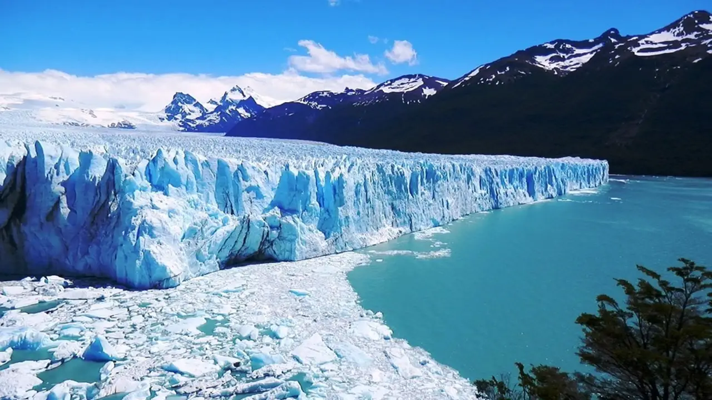
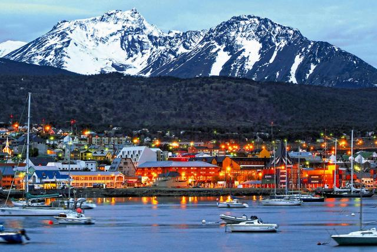

Glaciar Perito Moreno
Es una gruesa masa de hielo ubicada en el departamento Lago Argentino de la provincia de Santa Cruz, sudoeste de la Argentina, en la región de la Patagonia.
Más Info

Ushuaia
Ushuaia es una ciudad turística de Argentina. Se ubica en el archipiélago de Tierra del Fuego, el extremo austral de Sudamérica, apodado el "Fin del Mundo".
Más Info
Bariloche
San Carlos de Bariloche es una ciudad en la región de la Patagonia argentina. Limita con Nahuel Huapi, un gran lago glacial rodeado de montañas de los Andes.
Más Info